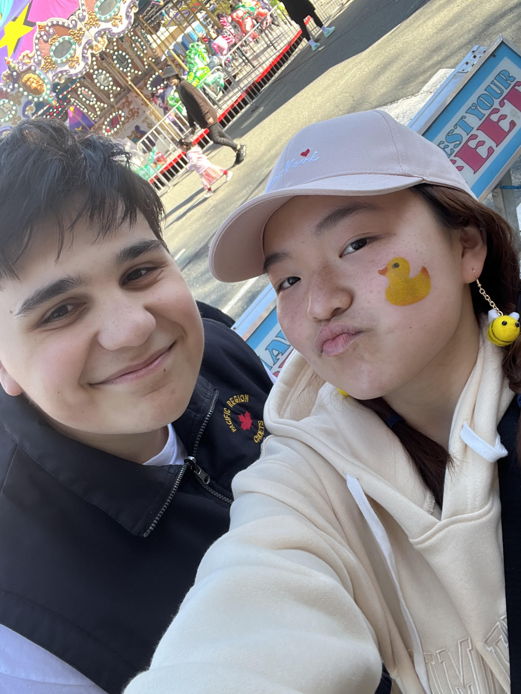

Let me introduce myself
My name is Alyssa Kou and I am currently in my second year as a computing science major and criminology minor at Simon Fraser University.
I am interested in machine learning, artificial intelligence, and cyber security.


👈 This is my amazing handsome scrumptious boyfriend, Artin
Professional Skillset
View my resume
Fun fact about me: I have aphantasia :o